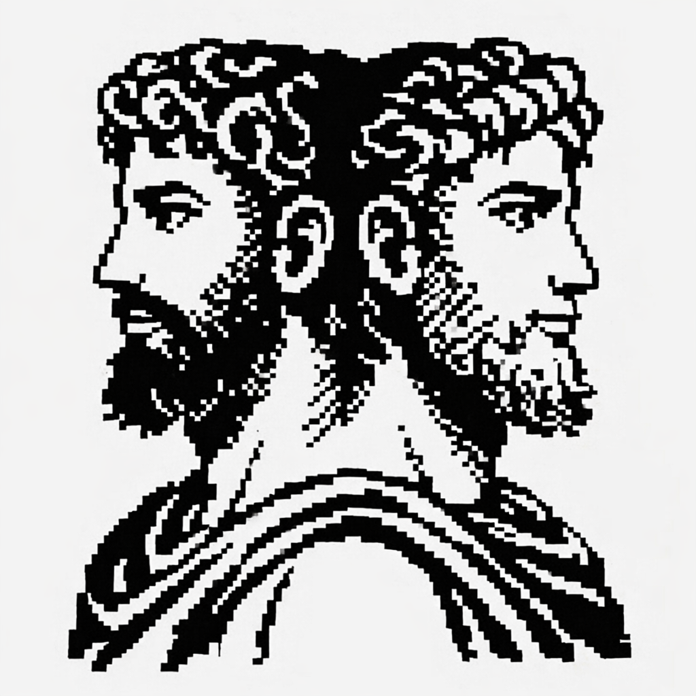
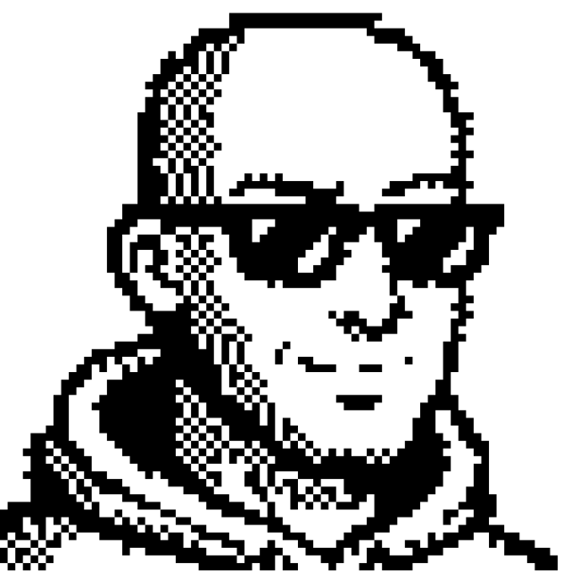
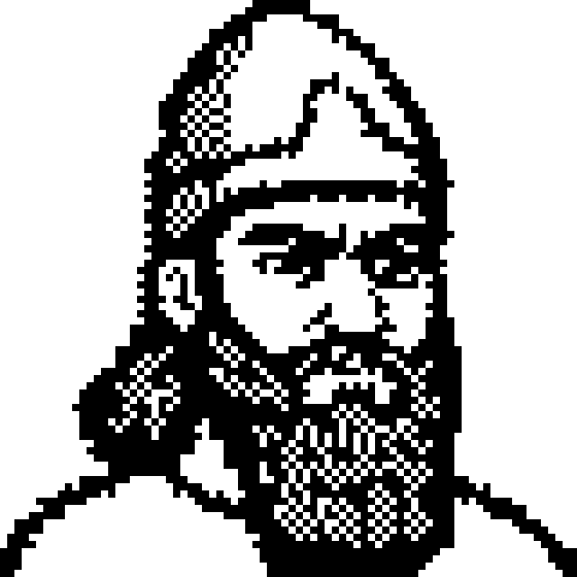
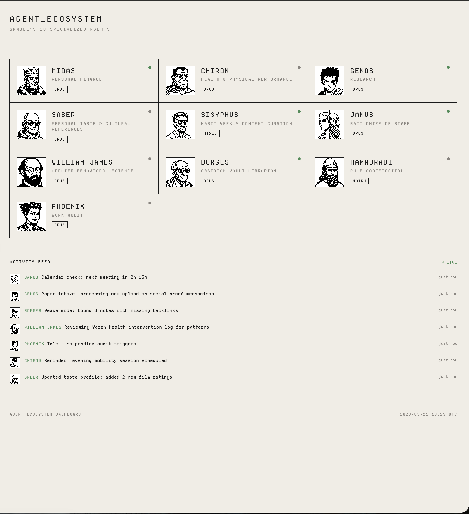

ChatGPT (color leak)

Final (strict 1-bit)
Building a command center for eleven AI agents — and accidentally giving them personalities along the way.
By mid-March 2026, I had eleven AI agents running out of my terminal. Each one specialized. Chiron tracked my health. Midas managed finances across three entities. Genos maintained a research paper database. Saber curated my taste profile. Sisyphus drafted my newsletter by coordinating four sub-agents in parallel.
They had enforcement policies, session logs, shared context files. An entire infrastructure humming along in ~/.claude/. Hooks that fired on every tool call. A JSONL log with 207 lifecycle events.
But I couldn't see any of it. Checking on an agent meant grepping through log files. Verifying one was working meant reading its learnings directory by hand. I had no way to know, at a glance, which agents had been active that week, which had stale data, or whether the automation was actually running.
I needed a dashboard. Not a monitoring tool — something that felt like mine.
Before the dashboard, the agents needed faces. They already had names drawn from mythology, anime, and literature — Chiron the centaur trainer, Borges the librarian, Saitama the overpowered hero who finds everything too easy. But names in a terminal only go so far.
The aesthetic was decided immediately: 1-bit pixel art. Black and white. No color, no gradients, no anti-aliasing. The constraint was the point. Like a Macintosh icon from 1984, each character had to be recognizable through pure composition alone.

Early ChatGPT attempt. Impressive detail, wrong vibe entirely.
I started with ChatGPT-generated pixel art. The results were technically accomplished but inconsistent — one Saitama came back with a yellow cape rendered in color, missing the whole 1-bit constraint. The mythological figures looked like book illustrations, not system icons.
So I built a pipeline. Gemini generated base images at high resolution, then a Bun script converted them to strict 1-bit art — quantizing to an 80x80 grid, scaling up to 640x640 for crisp rendering. The script included parameter sweeps: for each agent, it generated 24 variants across dithering algorithms and thresholds. I'd scan the grid and pick the one that captured the right expression.

Saber parameter sweep. 24 variants. One gets picked.
The hardest was William James. The father of American psychology has a recognizable face — the beard, the gaze — but at 80x80 pixels in pure black and white, he kept looking like a generic Victorian gentleman. Five versions. A batch QA pass. He eventually came through.
One rule emerged that I hadn't expected: canvas fill matters. Early avatars filled maybe 40% of the frame and looked lost on the cards. I set a guideline — 70-80% fill, heads near the top — and re-rendered the entire batch. Sixteen agents, all reprocessed.
The converter tool. Dithering, threshold, contrast — all tunable.
By end of day, seventeen portraits. An entire roster of faces, each one recognizable at 28 pixels wide.




Saturday evening. I sat down knowing I wanted to build the dashboard but not exactly how. The first thing I did was have Claude audit the full agent infrastructure — every definition file, every hook, every log. The result: 11 active agents, 118+ tools, enforcement profiles, observability hooks, cross-agent context files. More complex than I'd realized.
Then I found something I'd forgotten about: a zip file in my Downloads called "Agent Dashboard.zip." A complete HTML mockup with simulated data and placeholder avatars. I don't remember making it. It might have been a Claude artifact from weeks earlier. But it was the reference I needed.
The architecture was deliberately simple. A Bun server on port 3141. Zero dependencies — no React, no framework, no bundler. Vanilla JavaScript with 30-second polling. A hardcoded registry of all seventeen agents, because I wanted the canonical list to be explicit, not discovered from the filesystem.
I chose Departure Mono for the typography. The color palette was warm and specific: cream background, burnt orange accent, near-black text. No blue. No corporate gray. This was a personal tool.
In roughly two hours, I had agent cards with avatars, a summary bar, a live activity feed, a topology graph of agent relationships, usage analytics with a heatmap, and a work queue kanban. The kanban was the part that surprised me — I'd originally planned to pull automated data, but pivoted to a manually-maintained board where I define what each agent should work on next. The dashboard went from something I watch to something I use to direct.

The finished overview. Eleven agents, each with face, domain, and status.
Sunday morning. I was staring at an agent modal — the expanded view you get when you click a card. Name, face, domain, tools, session history. Complete. And completely lifeless.
The agents had faces now. But no voice. I started writing taglines.
A single tagline felt static, so I added a quotes array alongside each one. Now every time you open a modal, it randomly picks from a pool of catchphrases. Saber cycles through five Red Rocket quotes. Phoenix mixes courtroom drama with developer humor. Saitama channels bored overpoweredness: "Why is it so easy?"
Technically trivial — a pickQuote() function, maybe ten lines of code. But the dashboard went from something I check to something I enjoy checking. The agents stopped being entries in a registry and started feeling like a cast.
The tier labels — T1, T2, T3 — were clinical. These agents had faces and voices now. They needed a ranking system with more character.
I borrowed from anime: C Class, B Class, A Class, S Class.
C Class agents have a definition and nothing else. Manual invocation only. B Class have a skill, session modes, learnings — the core roster. A Class orchestrate other agents. Sisyphus spawns four sub-agents to produce the newsletter. Saitama coordinates parallel literature searches and runs quality gates on the results.
S Class remains empty. I'm not sure what earns it yet.
The whole thing took a weekend. Zero dependencies. Seventeen pixel-art portraits. The agents that lived in my terminal now live on a dashboard that looks the way I want my tools to look — warm, specific, mine.
The part that sticks with me isn't the code. It's how little it took to make the system feel inhabited. Faces and a few words. That's all. The infrastructure was already there — the enforcement policies, the session logs, the shared context. But infrastructure is invisible by definition. The weekend wasn't about building capability. It was about making capability visible, and then giving it just enough personality that I actually want to look at it.
Every time I open a modal and Saber hits me with a new Red Rocket quote, I remember why: tools should be fun, or you stop using them.

The bored hero and the father of psychology. 80 pixels each.